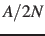
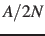
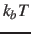

Adaptive Linear Bias/Experiment Directed Simulation
Experiment directed simulation applies a linear bias with a changing
force constant. Please cite White and Voth [19] when
using this feature. As opposed to that reference, the force constant here is scaled
by the width corresponding to the biased colvar. In White and
Voth, each force constant is scaled by the colvars set center. The
bias converges to a linear bias, after which it will be the minimal
possible bias. You may also stop the simulation, take the median of
the force constants (ForceConst) found in the colvars trajectory file,
and then apply a linear bias with that constant. All the notes about
units described in sections 6.4
and 6.3 apply here as well. This is not
a valid simulation of any particular statistical ensemble and is only
an optimization algorithm until the bias has converged.
-
centers
 Collective variable centers
Collective variable centers
Context: alb
Acceptable values: space-separated list of colvar values
Description: The desired center (equilibrium values) which will be sought during the
adaptive linear biasing.
The number of values must be the number of requested colvars.
Each value is a decimal number if the corresponding colvar returns
a scalar, a ``(x, y, z)'' triplet if it returns a unit
vector or a vector, and a ``q0, q1, q2, q3)'' quadruplet
if it returns a rotational quaternion. If a colvar has
periodicities or symmetries, its closest image to the restraint
center is considered when calculating the linear potential.
-
updateFrequency The duration of updates
Context: alb
Acceptable values: An integer
Description: This is,  , the number of simulation steps to use for each update to the bias.
This determines how long the system requires to equilibrate
after a change in force constant (
, the number of simulation steps to use for each update to the bias.
This determines how long the system requires to equilibrate
after a change in force constant ( ), how long statistics
are collected for an iteration (), and how quickly energy is
added to the system (at most, , where
), how long statistics
are collected for an iteration (), and how quickly energy is
added to the system (at most, , where  is the forceRange). Until the force
constant has converged, the method as described is an
optimization procedure and not an integration of a particular
statistical ensemble. It is important that each step should be
uncorrelated from the last so that iterations are independent.
Therefore, should be at least twice the autocorrelation time
of the collective variable. The system should also be able to
dissipate energy as fast as , which can be done by adjusting
thermostat parameters. Practically, has been tested successfully at
significantly shorter than the autocorrelation time of the
collective variables being biased and still converge correctly.
is the forceRange). Until the force
constant has converged, the method as described is an
optimization procedure and not an integration of a particular
statistical ensemble. It is important that each step should be
uncorrelated from the last so that iterations are independent.
Therefore, should be at least twice the autocorrelation time
of the collective variable. The system should also be able to
dissipate energy as fast as , which can be done by adjusting
thermostat parameters. Practically, has been tested successfully at
significantly shorter than the autocorrelation time of the
collective variables being biased and still converge correctly.
-
forceRange The expected range of the force constant in units of energy
Context: alb
Acceptable values: A space-separated list of decimal numbers
Default value: 3 
Description: This is largest magnitude of the force constant which one expects. If this parameter is
too low, the simulation will not converge. If it is too high the
simulation will waste time exploring values that are too
large. A value of 3 has worked well in the systems presented
as a first choice. This parameter is dynamically adjusted over
the course of a simulation. The benefit is that a bad guess for
the forceRange can be corrected. However, this can lead to
large amounts of energy being added over time to the system. To
prevent this dynamic update, add hardForceRange yes
as a parameter
-
rateMax The maximum rate of change of force constant
Context: alb
Acceptable values: A list of space-separated real numbers
Description: This optional parameter controls
how much energy is added to the system from this bias. Tuning
this separately from the updateFrequency
and forceRange can allow for large bias changes but
with a low rateMax prevents large energy changes that
can lead to instability in the simulation.
Jérôme Hénin
2015-03-03